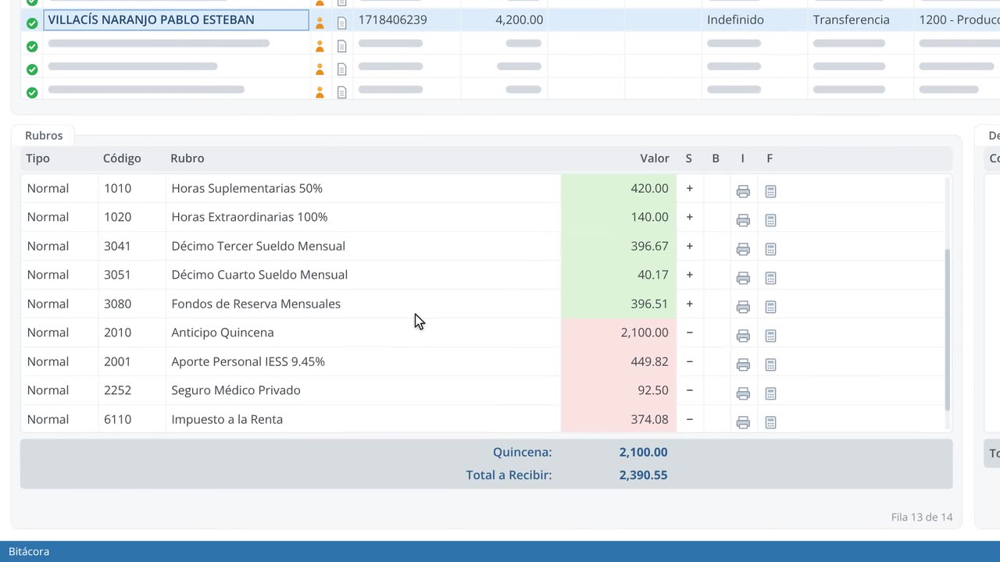
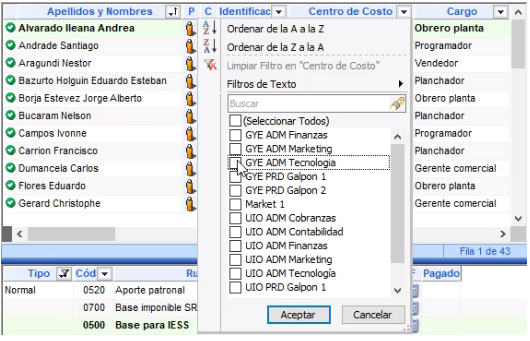
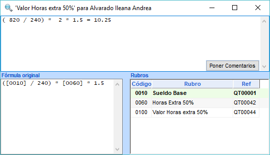
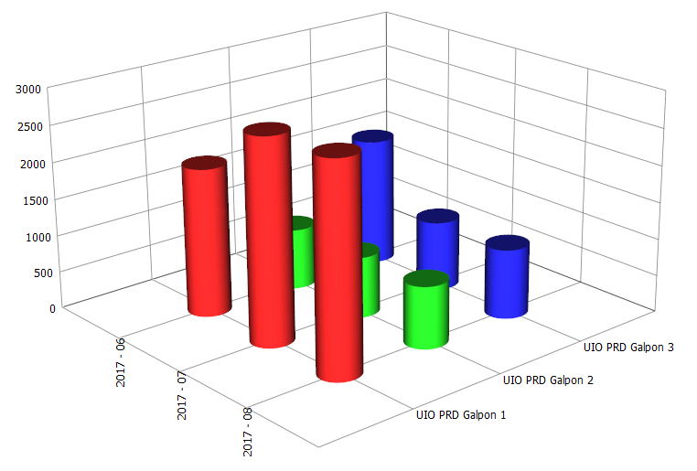

Fórmulas al estilo Excel
Cada rubro es una fórmula editable. Creas, cambias o eliminas rubros sin afectar los roles pasados.
Calcula el rol de pagos con fórmulas que tú mismo editas, como en Excel, y genera los archivos del IESS, el Ministerio de Trabajo y el SRI sin salir del sistema.

Pantallas reales del módulo Nómina de SquareNet.Clic en el video para verlo en pantalla completa.
Cada rubro es una fórmula editable. Creas, cambias o eliminas rubros sin afectar los roles pasados.
El procesamiento de rol más rápido del mercado, frente a 30–45 minutos en otros sistemas.
Archivos batch del IESS, anexo RDEP en XML, formulario 107 y archivos de décimos, utilidades y finiquitos.
Calcula el impuesto pronosticando cuánto ganará cada persona en el año, con gastos personales incluidos.
Archivos de acreditación con plantillas configurables, quincenas, pagos por partes y por centro de costo.
Muestra paso a paso cómo se calculó cada valor del rol. Ideal para auditorías.



16 reportes listos para usar, exportables a Excel o PDF desde el sistema.
Complemento ideal para el ERP de tu empresa: SAP, Microsoft Dynamics AX, JD Edwards, Infor u otro sistema administrativo financiero.
Te mostramos Nómina en una demo y te asesoramos para la cotización.